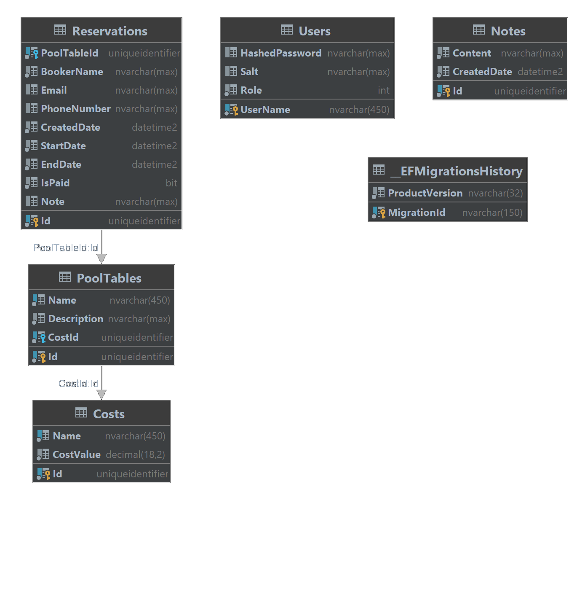

Baza danych
Baza danych składa się sześciu tabel (w tym pięciu kluczowych dla działania aplikacji).

Tabela _EFMigrationsHistory
Pomaga w przywróceniu aktualnej wersji oraz zaaktualizowaniu bazy danych w innych środowiskach niż głównego developera.
Tabela Users
Zawiera w sobie wszystkie dane na temat użytkowników aplikacji.
Tabela Notes
Zawiera w sobie notatki pracowników.
Tabela Costs
Zawiera w sobie koszt, który następnie przypisuje się do dowolnej ilości stołów.
Tabela PoolTables
Jest to abstrakcyjna reprezentacja fizycznie istniejących miejsc/stolików/pól/torów w danym lokalu.
Tabela Reservations
Jest to rezerwacja składana przez klienta. Należy przypisać do niej stolik, czas rozpoczęcia rezerwacji oraz czas zakończenia rezerwacji.
Rys. 3 | Diagram bazy danych